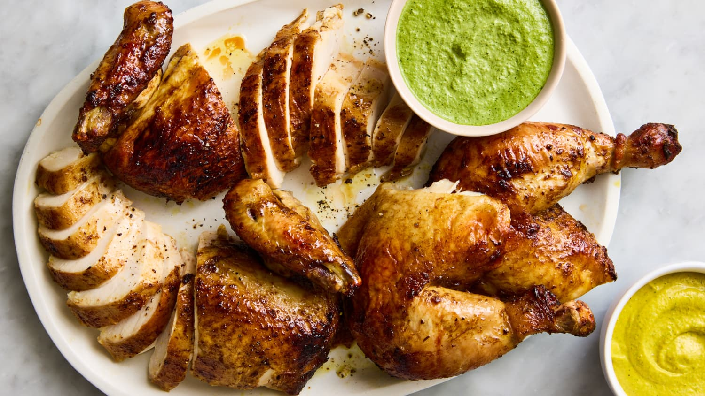

Pollo a la Brasa

My best friend made this dish at a BBQ on the lake and my wife fell in love with it. Ever since she has had the recipe as a staple in our house.
Ingredients
- 7 garlic cloves
- 1/3 cup soy sauce
- 1 Tbsp worcestershire sauce
- 4 Tbsp lime juice
- 3 tsp dijon mustard
- 3 tsp honey
- 2 1/2 tsp cumin
- 2 tsp paprika
- 1 1/2 tsp salt
- 1 cup cilantro
- 1-2 jalepeno peppers
- 3 scallions
- 1/2 cup mayonaisse
- 3 lbs chicken
Steps
- Blend 6 cloves garlic, soy souce, worcestershire sauce, 2 tbsp lime juice, 2 tbsp dijon mustard, 2 tsp cumin, 2 tsp paprika, 3/4 tsp salk, pepper, and vegetable oil in a blender. Place the chicken in a large sealable bag and pour in the marinade. Seal and refrigerate for at least 4 hours and up to 24 hours.
- Roast the chicen at 450 degrees, or grill on a barbeque.
- While the chicken is cooking, make the sauce. In a blender or food processor, add the cilantro, jalapenos, scallions, 1 clove of garlic, 2 tbsp lime juice, 3/4 tsp salt, 1 tsp dijon mustard, 1 tsp honey, 1/2 tsp honey, 1/2 tsp cumin, and 1/2 cup mayonaisse. Blend until smooth
- Serve the chicken with sauce on the site, or as a sandwich on ciabatta bread.